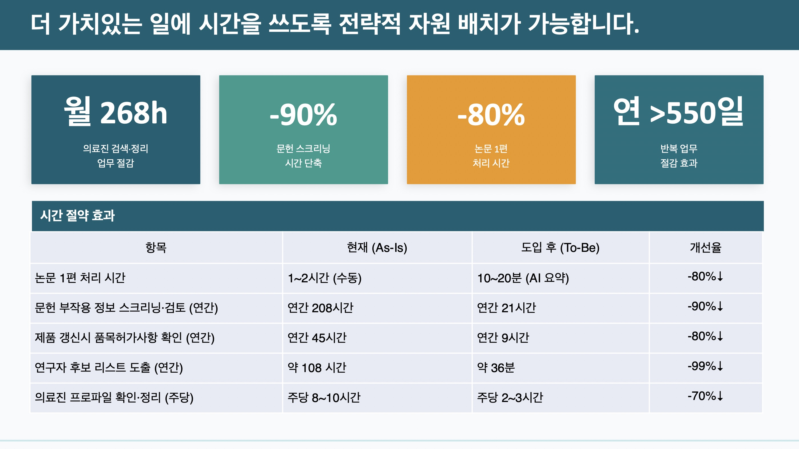

이 회사는 앞으로 7년 안에 신약 20개를 출시할 예정이라 일이 폭발적으로 늘어난다. 그런데 의사·약사 자격을 가진 전문가 직원들이 정작 논문을 찾고, 표를 정리하고, 규정에 맞춰 보고서를 바꾸는 단순 작업에 시간을 쏟고 있었다. 어떤 직원은 한 달에 120시간을 논문 정리에만 썼다.
부서 안에 AI 학습 팀을 만들고, 직원들이 가장 힘들어하는 일 3가지를 직접 뽑게 한 뒤 서울대 청년 교육생 3명과 짝지어 해결했다. 첫째, 흩어진 자료를 뒤져 4시간 걸리던 "임상시험 경험 있는 의사 찾기"를 그래프로 연결된 데이터베이스로 10분 안에 끝나게 했다. 둘째, 실수가 절대 용납되지 않는 의약품 안전성 보고의 수작업(연 208시간짜리 문헌 확인 등)을 자동 변환기로 90% 줄였다. 셋째, 논문 한 편을 요약해 회사 양식으로 만드는 1~2시간짜리 일을 자동 파이프라인으로 10~20분으로 줄였다.
과제별로 시간이 70~90% 줄어 합치면 1년에 550일 이상이 절약된다. 이 시간은 신약 출시 직후의 가장 중요한 시기에 전문가들이 본연의 일에 쓰게 된다. 성과를 본 독일 본사도 관심을 보여 글로벌 확산을 논의 중이고, 함께한 교육생 한 명은 인턴으로 채용할 계획이다. 발표자는 "AI는 사람을 대체하는 것이 아니라, 우리가 잘하는 일에 집중하게 해주는 도구"라고 말했다.